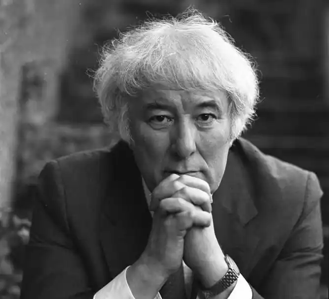
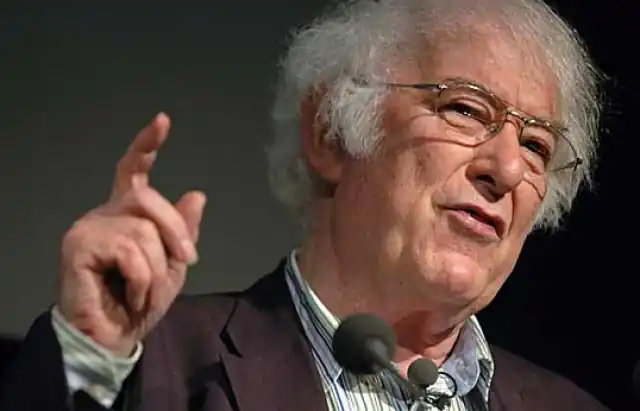

Шеймас Джастін Гіні — ірландський письменник, поет, перекладач та викладач. Лауреат Нобелівської премії з літератури 1995 рік "за твори ліричної краси й етичної глибини, що підносять щоденні дива та оживляють минуле".
Гіні був старшим сином у багатодітній католицькій селянській родині. Завдяки стипендіям він зміг навчатися в Сент Колемз Коледжі (St. Columb's College) в Деррі та в Королівському університеті Белфаста (Queen's University of Belfast). Завершив навчання у 1961 із почесною відзнакою.
З 1966 року Гіні працював викладачем Белфастського університету. Як запрошений професор викладав в Університеті Берклі. З 1975 по 2013 рік мешкав у Дубліні. У 1963 письменник став лектором в Інституті им. Святого Джозефа (St Joseph's) після співпраці із місцевими журналами. Через Філіпа Госбаума (Philip Hobsbaum) Гіні вдалось познайомитись із белфастськими поетами — Дереком Магоном (Derek Mahon) та Майклом Лонґлі (Michael Longley). У серпні 1965 він одружився із Марі Девлін (Marie Devlin), шкільною вчителькою — також письменицею, у 1994 році вона опублікувала Понад дев'ять хвиль (Over Nine Waves), збірку ірландських міфів та легенд. У 1971 повернувся до Королівського Коледжу. 1972 залишив викладання у Белфасті й перебрався до Дубліна й працював на посаді викладача у Керісфорт коледжі (Carysfort College). 1972 вийшла збірка Зимуючи в мандрах (Wintering Out) й впродовж наступних кількох років Гіні почав проводити читання у Ірландії, Британії та Сполучених Штатах. У 1975 Гіні видав четверту книгу, Північ (North). Він обійняв посаду голови англійської кафедри у Керісфорт коледжі 1976 року. 1981 року залишив Керісфорт щоб стати відвідуючим професором у Гарварді. Дістав два звання почесного доктора: від Королівського університету й від університету Фордгем (Fordham University) у Нью-Йорку. Гіні обіймав посаду професора риторики та ораторського мистецтва (Boylston Professor of Rhetoric and Oratory) у Гарварді 1985–1997 й Ralph Waldo Emerson Poet in Residence там само у 1998–2006. Одержав звання доктора літератури від Bates College. 1989 був обраний професором поезії (Professor of Poetry) у Оксфорді, посада, яку він посідав до 1994. Свій час він ділив між Ірландією й США; одночасно продовжував читання, що незмінно супроводжувались великим успіхом. У 2006 році Гіні присуджено Премію Т. С. Еліота. У січні 2008 року він одержав медаль Каннінгама, найвищу відзнаку Ірландської королівської академії. Цього ж таки року одержав премію Девіда Коена за весь творчий доробок. Був прихильником об'єднаної Європи й виступав за підтримку Лісабонського договору на референдумі в Ірландії. Помер 30 серпня 2013 року в Дубліні від інсульту.